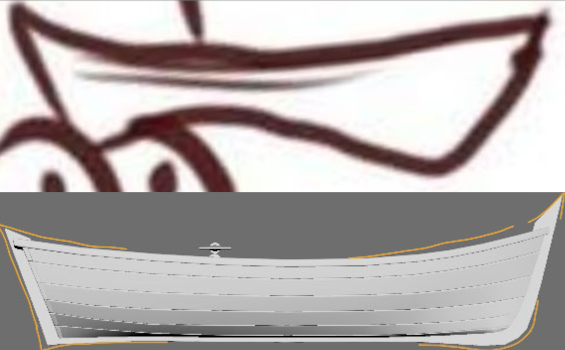
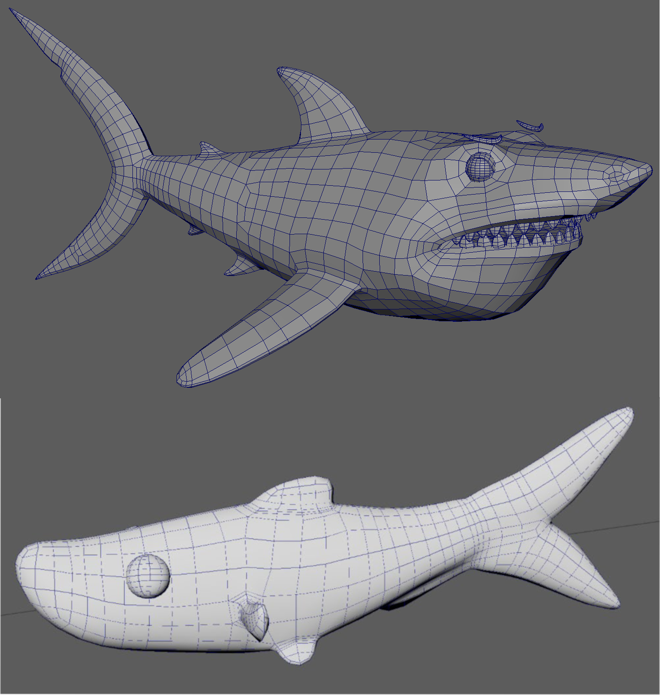
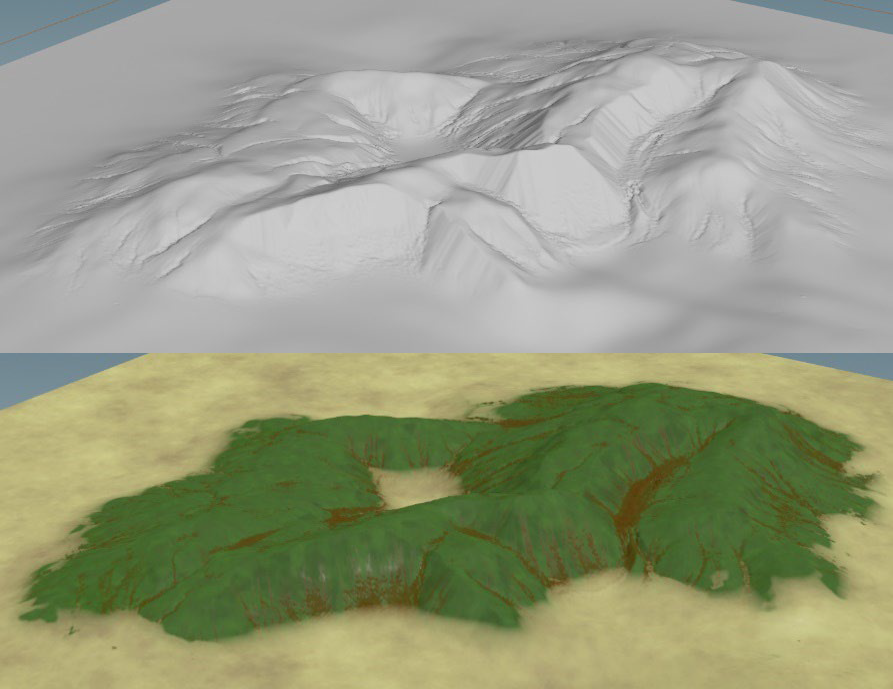
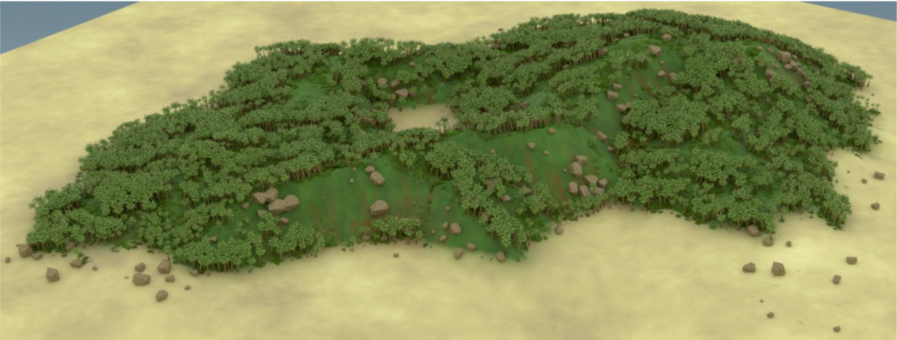

Our concept artists were focusing on characters so I had full reign over these assets. For the boat I first blocked out the shape, incorporating the upside down shape of the beak into the silhouette of the hull.

Refined this model further across multiple iterations, adding trims, seats, and lastly bevelling all the individual planks to smoothen the corners. Did the UVs in Maya, making sure to align and straighten along the planks, allowing for easier wood grain textures later.
In substance painter, applied a custom wood materials, then made my own custom smart material to add thicker paint layer ontop. Using a stencil to paint on a black mask between the two material to create the worn and weathered effect of peeled paint on the coreners of the boat.
The fishing rod and newspaper assets were much simpler, being smaller in the camera view. Still had some interesting challenges, like the coiled string in the line, or tying the knot around the hook. Mainly had fun making these assets.

Originally I used Houdini's heightfield scatter for the objects, however because of the USD setup we had for the project and newly implemented solaris features, the instances were not getting their textures. Switching to a different setup with the instancer node solved my problem, but hopefully this issue in Solaris has been fixed since. Using Houdini has peaked my interest in using the software for more procedural uses in the future, if I can get access to it again.